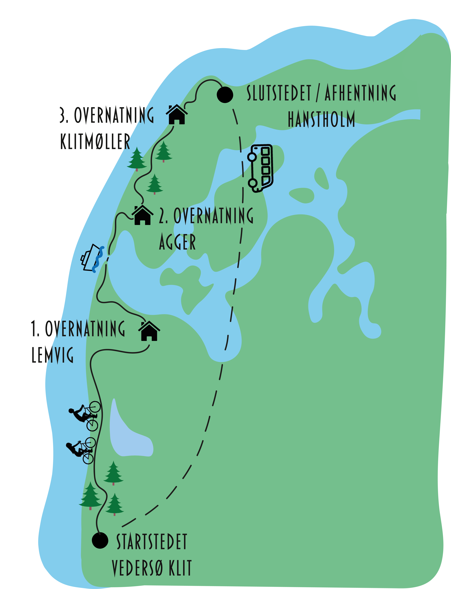

CYKELRUTEN

1. DAG - FRA VEDERSØ KLIT TIL LEMVIG
Dagsetape: 50 km
På den første etape kan I bl.a. opleve den smukke natur i Husby Klitplantage, havnebyen Thorsminde, Bovbjerg Fyr- og ikke mindst klinten.
1. overnatning finder sted på Hotel Tante i Lemvig, og ligger et stenkast fra havnen. Her kan I nyde aftenen med en gåtur langs molen og et lækkert måltid på én af de mange resturanter.
2. DAG - FRA LEMVIG TIL AGGER
Dagsetape: 45 km
På den anden etape starter i dagen ud med, at cykle langs Limfjorden. Herudover kan I bl.a. opleve Harboøre Tange, havnebyen Thyborøn, som rummer et hav af seværdigheder og ikke mindst Vestkysten barkse natur.
2. overnatning finder sted på Agger Feriecenter, hvor der hen over sommeren vil være en masse aktiviteter.
3. DAG - FRA AGGER TIL KLITMØLLER
Dagsetape: 50 km
På den tredje etape, cykler I gennem smukke Nationalpark Thy, hvor I heriblandt kan opleve Lodbjerg Fyr, Nørre Vorupør og ikke mindst Cold Hawaii i Klitmøller.
3. overnatning finder sted på Klitmøller Badehotel, som ligger tæt på Vesterhavet. Her kan I nyde jeres aftensmad på Badehotellet eller spise på én af de mange restauranter.
4. DAG - FRA KLITMØLLER TIL HANSTHOLM
Dagsetape: 15 km
Den fjerde og sidste dag, er den korteste dag, da I allerede bliver hentet kl. 14 i Hanstholm. Her har I rig muglighed for at opleve den lille havneby Hanstholm, og ikke mindst smage på dagens fangst.
Ved Bunkermuseet i Hanstholm bliver i afhentet og transporteret tilbage til Startstedet i Vedersø Klit.
Alt er planlagt og tilrettelagt - I skal blot nyde ferien og træde i pedalerne.
BOOK CYKELFERIEN HER